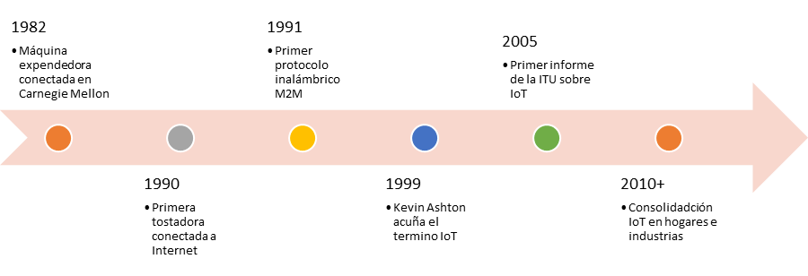

Módulo 1.2. Historia y evolución del IoT
La historia del Internet de las Cosas (IoT) no es reciente. Aunque el término se popularizó en los últimos años, sus fundamentos tecnológicos se remontan a décadas atrás. Comprender esta evolución es clave para valorar el estado actual del IoT, su madurez tecnológica y sus múltiples aplicaciones. Desde los primeros sistemas conectados hasta la aparición de protocolos modernos y microcontroladores asequibles, el recorrido del IoT es una síntesis de avances interdisciplinares.
Metodología
| Objetivo específico | Resultado de aprendizaje | Evidencias de aprendizaje | Actividades de aprendizaje |
|---|---|---|---|
| Analizar la evolución histórica y tecnológica del IoT | Explica el origen del concepto, los hitos tecnológicos clave y la importancia de protocolos y hardware en su evolución |
|
|
Orígenes del IoT:
El concepto de conectar objetos físicos a una red de comunicación comenzó a tomar forma a finales del siglo XX. Uno de los primeros hitos fue la red ARPANET en los años 80, precursora de Internet, que demostró el potencial de la interconexión digital. Sin embargo, fue en 1999 cuando el término "Internet of Things" fue propuesto por Kevin Ashton, investigador del MIT, al imaginar un sistema que permitiera a los objetos recolectar datos sin intervención humana directa.
Figura 5: Diagrama de flujo sobre hitos principales para el IoT. Elaboración propia
Evolución tecnológica:
El desarrollo del IoT ha estado marcado por avances en tres ejes clave:
- Sensores más precisos y asequibles: su miniaturización y abaratamiento han permitido medir con precisión variables como temperatura, humedad, movimiento, luz, entre otros. Gracias a la miniaturización y la nanotecnología, los sensores actuales son más pequeños, consumen menos energía y ofrecen mayor precisión. Esta evolución permitió la creación de conceptos como el smart dust
-
Protocolos y conectividad: tecnologías como Wi-Fi, Bluetooth, ZigBee, LoRa y 5G han dado soporte a la conexión masiva y flexible de
dispositivos. Protocolos como MQTT y CoAP posibilitaron la transmisión eficiente de datos en redes con dispositivos limitados en recursos.
Además, IPv6 resolvió el problema del direccionamiento masivo, permitiendo millones de dispositivos únicos en red.
Antes del IoT Con IoT Sensores aislados Sensores conectados en red Hardware costoso y propietario Hardware abierto y asequible (Arduino, ESP32) Protocolo TCP/IP clásico Protocolos ligeros: MQTT, CoAP, LPWAN -
Microcontroladores y plataformas accesibles: la llegada de placas como el ESP32 ha hecho posible integrar procesamiento local,
conectividad y bajo consumo en un solo chip asequible. El auge de plataformas como Arduino, Raspberry Pi y ESP32 democratizó el acceso a
hardware de desarrollo. Ya no solo las empresas podían experimentar con IoT; estudiantes, makers y startups comenzaron a innovar a bajo costo.
Década Sensores clave Tecnología de red Microcontroladores destacados 1990s Básicos (luz, temperatura) Ethernet, GSM PIC, primeros AVR 2000s Múltiples tipos Wi-Fi, Bluetooth Arduino, ESP8266 2010s Miniaturizados y avanzados ZigBee, LoRa ESP32, STM32 2020s Inteligentes (IA integrada) 5G, Wi-Fi ESP32-S3, Raspberry Pi Pico W Figura 6: Collage evolutivo de sensores, chips y tecnologías inalámbricas por década. Tomado de link
Hitos clave en la historia del IoT:
Algunos hitos han sido fundamentales para la expansión del IoT:
- RFID (1990s): permitió identificar objetos sin contacto.
- IPv6 (2000s): habilitó una red casi ilimitada de dispositivos.
- Protocolos ligeros (MQTT, CoAP): ideales para redes de baja potencia.
- Redes LPWAN (LoRa, Sigfox): conectividad de largo alcance y bajo consumo.
- Fog & Edge Computing (2015+): procesar datos más cerca de la fuente
Nota sobre conceptos claves:
- MQTT: Publicador-suscriptor ligero ideal para sensores.
- LoRa: Red de bajo consumo para zonas rurales o industriales.
- ESP32: Microcontrolador económico con WiFi/Bluetooth integrado.
El papel de la conectividad:
La conectividad ha sido el motor que ha dado vida a los sistemas IoT. Inicialmente limitada por redes locales o celulares costosas, la llegada de tecnologías como:
- Wi-Fi (alta velocidad y bajo costo)
- Bluetooth (consumo mínimo)
- LoRa (larga distancia con bajo ancho de banda)
- 5G (ultra baja latencia y conexión masiva)
ha permitido cubrir múltiples casos de uso, desde hogares inteligentes hasta vehículos autónomos.
Video 2:
IPv6 for IoT
Ver completo
Crecimiento y expansión del IoT:
La expansión global del IoT ha sido impulsada por:
- Reducción del costo del hardware
- Mayor disponibilidad de plataformas de desarrollo (Arduino, ESP32, Raspberry Pi)
- Ecosistemas abiertos y comunidades de desarrollo
- Cloud computing y Big Data como soportes para el análisis de datos recolectados
Hoy, se estima que existen más de 15 mil millones de dispositivos IoT conectados, y se espera que esa cifra supere los 30 mil millones en los próximos años.
Figura 7: Gráfico de crecimiento de dispositivos IoT conectados. Tomado de link
Reflexión: ¿Qué impacto tendrá el crecimiento de IoT en el consumo energético y la gestión de datos?
Conclusiones
Hoy, el IoT se posiciona como la columna vertebral de la transformación digital global. Lo que empezó como un ideal de automatización industrial se ha convertido en una realidad que impacta desde la agricultura hasta los hogares inteligentes. La clave no está solo en la tecnología, sino en cómo esta reconfigura modelos de negocio, relaciones con el cliente y formas de innovar.
Referencias
- E. Borgia (2016). Internet of Things: Research Challenges and Solutions. Computer Communications
- T. Saarikko et al. (2017). The Internet of Things: Are You Ready for What's Coming? Business Horizons
- X. Xia (2020). IoT Research and Application of Information Technology. IEEE